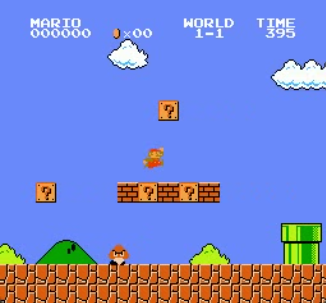
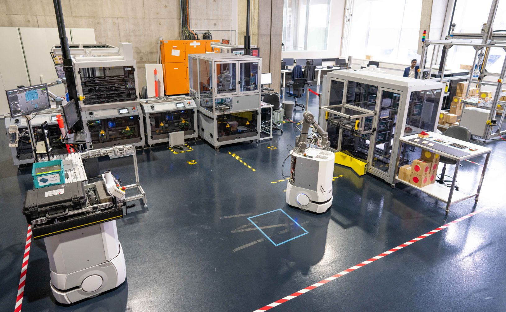

11Jun 2025
Setting up Obsidian with Git for Team Collaboration
A step-by-step guide to syncing an Obsidian vault across machines and teammates using Git.
A working notebook of tech writing, drafts, and pieces I keep coming back to. Updated as I learn.
A step-by-step guide to syncing an Obsidian vault across machines and teammates using Git.
A guide on managing ephemeral ports in AWS Security Groups and Network ACLs, ensuring secure and efficient network configurations.

Exploring the fundamentals of neural networks, including architecture, activation functions, and training techniques.
A really easy step-by-step guide to configure the Ollama server for local LLMs.

Highlighting ML-driven wound measurement and segmentation.

Exploring the process of training an AI agent to play Super Mario Bros using reinforcement learning.

Exploring the challenges and lessons learned while building a machine monitoring system with Azure services.

Balancing clear, expressive code with meaningful comments.

Organizing spreadsheet data correctly is crucial for ensuring clarity, consistency, and ease of analysis — drawing insights from W. Broman and Kara H. Woo's comprehensive guide.


David Na and Nikunj Oza of NASA Ames share insights on mission-critical AI/ML applications, their work, and common misconceptions.

Five academics on how generative AI is reshaping creative and knowledge work — and the concerns it raises about skill loss, biases, and displacement.
Microsoft News covers Vietnam's gold and silver medals at the World Office Skills Championship 2020–2021. I love it because I am in it.

YBOX features a heartwarming story of two best friends who conquered the World Office Skills Championship together.

A look at the psychological cost of overstimulation in childhood. Stronger on the diagnosis than the prescription, but the core message is worth sitting with.

iDesign shares seven essential tips for confidently presenting a design project — practical advice for designers and beginners alike.

Two AWS evangelists on how EQ supports collaboration: savoring, gratitude, recovery, and building real workplace relationships.

Pulitzer-winner Charles Duhigg on his book Supercommunicators: what makes some people exceptional at meaningful conversation, and why.

Feiler shares three practical tips for re-narrating your own life during transitions — finding meaning in change.

Two AWS senior architecture managers challenge conventional career wisdom on work–life balance, mentorship, and growth.